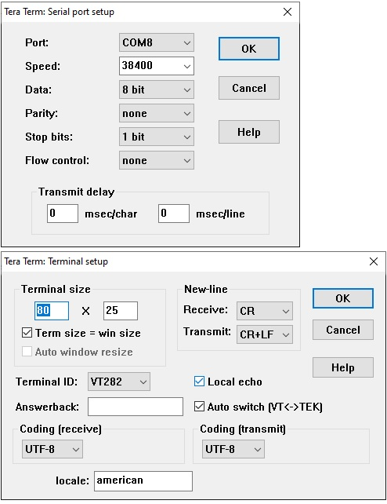

<H1>Tera Term</h1>
Tera Term is a serial port terminal program that is useful for configuring the HC-05<br>
It can be downloaded from <a href="https://osdn.net/projects/ttssh2/downloads/72009/teraterm-4.105.exe/">here</a><br>
<p>
<h2>Configuration for HC-05</h2>
Configure the Serial and Terminal: <br>
